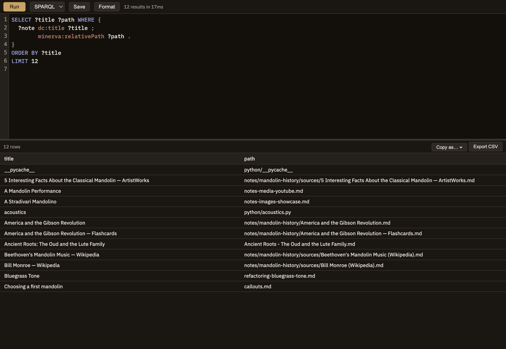

A dedicated tab for asking questions of your knowledge base — the links between your notes, or the data in your tables — and getting back a results table you can sort, save, or drop into a note.
The Query menu
Everything starts from the Query menu:
Cmd+Shift+Q
New Query — opens a fresh, empty Query panel ready to write in.
Stock Queries
A library of ready-made queries for common questions. Pick one to open it pre-filled, then run it as-is or tweak it (see below).
Saved Queries
Queries you've saved yourself. You can keep one with this project or make it available everywhere, and re-open or edit any of them here.
The panel
The panel has a place to write your query on top and the results below. You can ask two kinds of questions — one that follows the links and connections between your notes, and one that queries the data in your tables — and a dropdown switches between the two. The toolbar has Run, Save, and Format buttons, and shows how long the last run took and how many results it found.
Results table
Click a column heading to sort by it; click again to reverse the order.
Copy as…
Turns the current results into something you can paste into a note — a List or Table that stays live and refreshes each time you view the note (see Result blocks), or an editable cell holding your exact query so you can keep refining it inside the note (see Runnable cells).
Export CSV
Saves the current results as a spreadsheet file — a one-time snapshot, not a live block.

Screenshot — Query panel
Ready-made questions about your notes
A set of ready-made queries for common questions about how your notes connect, ready to run or adapt:
All notes with tags
Every note alongside the tags filed on it.
Backlinks to note
Name a note, then run it to see everything that links in.
Orphan notes
Notes with no links in or out.
Most-linked notes
Ranked by how many notes link to them.
Recently modified
Notes ordered by when you last changed them.
All tags with counts
Every tag in use, and how many notes carry it.
Notes in folder
Name a folder to list the notes inside it.
Typed outgoing links
A note's labelled links (such as supports or rebuts) grouped by kind.
Typed backlinks
The same, for labelled links pointing in.
All sources with authors and year
Every source you've added, with its basic citation details.
Most-cited sources
Sources ranked by how many notes cite them.
Sources missing details
Sources without an author, year, or title — good candidates to tidy up.
Ready-made questions about your tables
All tables
Lists every table you can query.
Describe a table
The column names and types for a table you name.
Summarize a table
Quick per-column stats such as smallest and largest values and how many entries are blank.
Blanks per column
How complete each column actually is.
Top values for a column
A quick count of the most common values in a column you name.
Where a saved query lives
When you save a query, you choose whether it belongs to this project — handy for something tailored to how this knowledge base is set up — or is available everywhere, so a general-purpose query like "orphan notes" follows you into every project. You can switch this later from the Saved Queries menu.